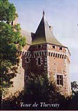

|
Les 17
Communes
du Canton
de
Beaumesnil :
Le Noyer en
Ouche
Gouttières
Beaumesnil
Thevray
Ajou
Saint
Aubin des Hayes
Sainte
Marguerite en Ouche
Les Jonquerets
de Livet
Saint
Aubin le Guichard
Grandchain - Granchain
La Barre
en Ouche
Bosc-Renoult
en Ouche
Epinay
Landepéreuse
Gisay la
Coudre
La Roussière
Saint
Pierre du Mesnil
Retour
Le Canton de
Beaumesnil
Présentation :
cliquez...
|
Thevray :
Superficie : 1495 Ha.
292 Habitants
(déc 2015)
soit 19 Habitants par km² ou 5,12 Ha par Habitant
|
Mairie : Tel/Fax : 02.32.44.43.20
Secrétaire : Sophie VAN HOLLEBEKE
Secrétariat
ouvert le Vendredi de 16h00 à 18h00
E mail :
thevray@meo27.fr
Maire délégué : Gérard FAUCHE Tel : Port : - E-mail :
Conseillers :
Mme BASTIEN Nathalie
conseillère municipale – conseillère communale de Thevray
Mme CARPENTIER Corinne
conseillère municipale – conseillère communale de Thevray
|
Thevray sur le site de l'Insee
Le site internet de Thevray :
http://thevray.free.fr
"Bibliothèque
Thevrayenne" voir ci-dessous
Actualités :
Un très beau livre "Thevray, un village en Pays
d'Ouche" coécrit par des habitants du
village est paru en mai 2005. Au hasard des pages de ce livre, on découvre que
Thevray n'est pas en reste par rapport à sa voisine (Ajou et plus
particulièrement son Hameau Mancelles) sur le registre de la chanson, pour
preuve les paroles de " La Chanson du Fromage " page 64. ou encore pages 100,
108 et 130.... Un ouvrage à ne pas manquer ...
En vente à l'Office de Tourisme de
Beaumesnil.
Bibliothèque associative de prêt de
livres :
La "Bibliothèque
Thevrayenne" ouverte depuis le
24 septembre 2005 a cessé son activité
Histoire :
Doyenné d'Ouche. Patronage : le chapitre d'Evreux par don de Roger de Thevray
(1170-1180)
La commune de s'étend sur 1490 Ha. Ses habitants sont les Thevrayens.
On hésite sur l'origine du nom de Thevray entre deux étymologies latines : soit
tilia (til ou teil, en ancien français) : l’endroit planté de tilleuls. Soit
tegula (tuiles) : l’endroit ou l’on fabrique des tuiles (Extrait du livre
Thevray, un village en Pays d'Ouche). Thevray s'est appelé
Teveraium
(Rubriques de Lire en 1170), Tevraicum (grande charte de lire),
Tevrayum (charte de Gislebert de Tevrai XIIè S.), Tivreium vers 1200,
Thevray au XIV è S.
Nom ancien : *Tiberiacum,
nom de domaine gallo-romain en -acum précédé du nom d'homme romain (porté par un
Gaulois romanisé) Tiberius, sans rapport avec Thiberville qui contient
le nom de personne germanique Theudebert > Thibert.
L'église est dédiée à Saint Martin, elle est bâtie du XV au
XVIè S. ; Jacques de Chambray, grand bailli d'Evreux, seigneur de Thevray, fait construire une chapelle
funéraire à côté du chœur, du côté de l'évangile, au nord de l'édifice, il y repose en 1504, mais pas pour l'éternité
puisque le sieur de Guyenro de Châtel, un de ses successeurs sur les terres de Thevray,
fait détruire le tombeau au XVIIe pour prendre sa place. Il ne reste plus
aujourd'hui que la chapelle bâtie en pierre et en silex et dont la voûte porte
encore les armoiries de Chambray alliées à celles de Chollet et de Ménilles. En
1878, une tour en pierres et silex a été ajoutée devant la façade ainsi que deux
chapelles au sud de la nef.
Voir
"Thevray, un village en Pays d'Ouche" pages 167 et suivantes.
La Tour
:
Située près de l'ancien four banal, au sud-est du quadrilatère sur lequel était
édifié le Château et ses dépendances, la Tour est presque entourée d'eau. Ses
murs élevés forment un polygone régulier avec un corps carré tourné vers
l'intérieur de l'enceinte. Une chapelle voûtée, en chêne couronne l'édifice qui
fût l'une des dernières constructions militaires du Moyen Age.
Construite en 1489 par Jacques de Chambray .
Imposante tour fortifiée avec pont levis entourée de fossés. Remarquables et
imposantes charpentes. |
 |
|
Jacques de Chambray, Chevalier,
Seigneur de Thevray, Chambellan du Roi, Bailli et gouverneur d'Evreux, reçoit en
partage, le 3 Avril 1478, la terre de Thevray où il fit bâtir un château fort,
sans doute à l'emplacement de celui qui avait été brûlé par les Anglais après
1417. Ayant pu apprécier les désastres causés par l'invasion étrangère, il
résolut de le fortifier et d'élever une gigantesque tour d'enceinte destinée à
le protéger.
Selon plusieurs auteurs, elle fut
édifiée en 1489. Le sire de Chambray, par permission spéciale du Roi de France, y
fit placer un canon pour sa défense. Il fut nommé vers 1498 Grand
Bailli d'Evreux et Ambassadeur pour ratifier la paix d' Etaples (Etampes ?) et mourut sans
alliance le 4 mars 1504 à Magny (Seine et Oise). Il fut inhumé dans l'église de
Thevray, puis en 1532 dans la chapelle St-Jacques de Thevray
(Extraits de la Notice sur la Tour de
Thevray, de M.H.Quevilly, de la Sté Française d'Archéologie - 1874)
Voir
"Thevray, un village en Pays d'Ouche" page 14 et suivantes.
Chartrier du château de Thevray : Chartrier
intéressant le château de Thevray, des terres sises surtout à Saint-Aubin et au
Bosc-Roger, les familles de La Boullaye, Le Loutrel et d'Origny, aux XIVe-XIXe
s.
http://daf.archivesdefrance.culture.gouv.fr/sdx/ap/fiche.xsp?id=AD02700AP_000000036
Lors de la Révolution en 1789, M. de la Boullaye était seigneur de Thevray.
1698 : Le Prêtre Vicaire se nomme Jean Hardy, il
succède à Richard Le Geydois.
10 Fév 1704 : Inhumation de Richard Le Geydois,
Prêtre Curé de Saint Martin de Thevray
1704 : Le Prêtre se nomme Robert Le Mettais
1808-3 octobre : Décès de Dame Marie Anne de
Fontaine de Boiscard à l'âge de 68 ans, Veuve de Monsieur François Léon de
La Boullaye, née le 19 mars 1740 à Combon. Fille de Monsieur Charles de Fontaine
et de Dame Anne Le Roussel (?),
Les témoins sont François Léon Pomponne de La Boullaye âgé de 29 ans et Charles
Victor de La Boullaye, 28 ans, tous deux Fils de la défunte. ( Thevray-Archives 27-Reg1808 Im
041 ).
1809-16 janvier : Décès de Monsieur François
de La Boullaye de Bosroger, en son Château de Thevray, propriétaire, à l'âge de
80 ans, né le 28 janvier 1789 à Gisay, section du Bosroger, époux de Dame Marie
Catherine Barbe Le Loutrel,
Les témoins sont François Léon Pomponne de La Boullaye, propriétaire, âgé de 30
ans et Charles Victor de La Boullaye, propriétaire, âgé de 28 ans, tous deux
Cousins du défunt. ( Thevray-Archives 27-Reg1809 Im 061 ).
1830-7 janvier : Décès de Madame Marie Catherine
Barbe Le Loutrel à l'âge de 86 ans, Veuve de Monsieur François De La Boullaye, en
son Château de Bosc Roger.
Les témoins sont Louis Auguste Marie Antoine Leforestier du Saptel, 57 ans, écuyer, propriétaire, et Jean François De Hesbert,
53 ans, propriétaire, tous deux de Thevray et gendres de la défunte. (
Thevray-Archives 27-Reg1830 Im 460 ).
1830-28 juillet : Décès de Monsieur Le Comte Charles Foucaud Du Merle, à l'âge de 52 ans et 9 mois, Propriétaire, Maire de Thevray,
époux de Dame Eugénie Louise Madeleine De Courtheuvre , en son château de La
Traboudière.
Les témoins sont Etienne Putel, 46 ans, cultivateur et Jacques
Joseph Buquet, 27 ans, Charretier. ( Thevray-Archives 27-Reg1830 Im 469 )
|
|